A restored library listed games that were not there. Now Clarity finds them
Back up on one machine, restore on another, and every path points at nothing.
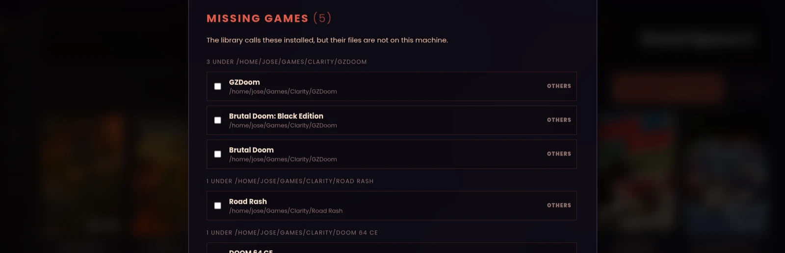
Copy your library to a second computer and it arrives convinced that everything is still installed. It is not. The paths were right on the machine you left behind, and on this one they lead nowhere, so the gallery sits there offering to play games that are not on the disk. Games you added by hand get it worst, because a path is all they ever were.
Settings, Library, Missing games. It goes through everything marked installed and checks whether the files are actually there: the install folder for GOG, Epic and recipe installs, the path inside the launch command for anything else, the cart file for PICO-8. Steam games are left out because they already work this out for themselves, and so is anything whose launch command names no path worth checking.
The part I spent the longest on is what it does not do. Half my library lives on drives I unplug, and with one of those out every game on it looks deleted. So nothing is ticked when the list opens, everything is grouped by the folder that went missing, and a drive that is simply not mounted says so in its own line rather than appearing as two hundred missing games.
Two ways out, because the right one is not the same for every row. Mark not installed keeps the game, which is what you want for anything you own and can install again. Remove from library takes the row out, which is usually right for something you added by hand and whose folder is gone for good.
Recipes were buried in the code. Now they have a page, and your covers say which games use one
Seven of them, what each one was for, and a pot on the cover of every game in your library that carries one.
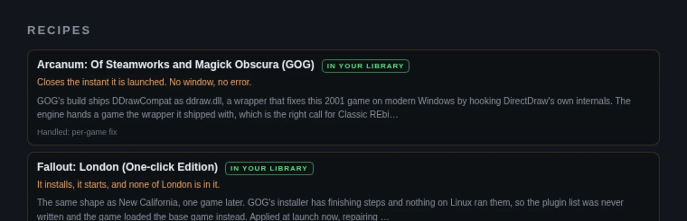
A recipe is Clarity’s fix for one named game. Not “improved compatibility”: a real game that did not work, the exact fault, and the fix, put on when you press play. There are seven, and until now the only way to know they existed was to read the source or the fixes page on this site.
They have their own item in the settings now, with what each game did wrong, why, and what is being handled. The ones you actually own sort to the top and say so, because a list of fixes for games you do not have is a changelog rather than a tool.
And every game in your library that carries one now wears a small pot beside its store mark, next to the penguin or the four panes. Hover it and it names the recipe. Five of mine have one: Arcanum, Road Rash, The Witcher, Fallout: New California and Fallout: London. The badge asks the launcher the same question the launcher asks itself, so it cannot tell you a game has a recipe that will not actually fire.
Recipes could not see your Steam games. Now they can
Doom 64 CE told me to install Doom 64. It was installed. It was just on Steam.
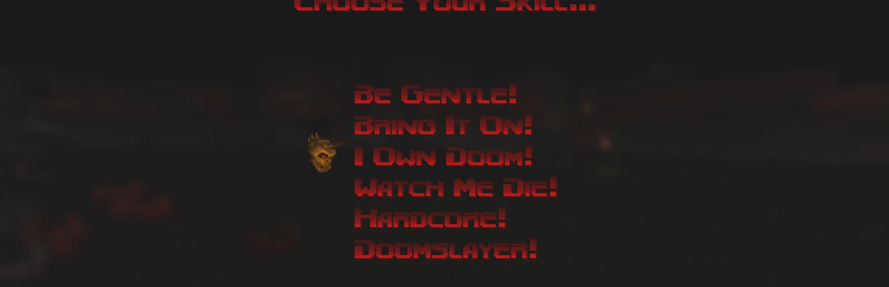
Install Doom 64 CE, own Doom 64, and Clarity would tell you to go and buy Doom 64. The recipe needs that game’s WAD to build its own, and when it went looking for your copy it found nothing.
The reason was narrow and the damage was not. When a recipe asks what you own, it was handed a list built only from the installer’s own database, which knows GOG and Epic and nothing else. Any recipe wanting a file out of a Steam game would decide you did not have it. Doom 64 is a Steam title, so that is where it showed up, but it was never only about Doom 64.
Steam is in that list now, and Doom 64 CE builds its IWAD from the copy you already own.
Fixing that uncovered a second one. The DOOM + DOOM II re-release keeps two copies of each IWAD, the modern build and the original, and the fix shipped last week only knew where GOG puts them. Steam arranges the same folder differently, so a Steam copy still handed DOOM CE the wrong file and sent you to plain Doom II without a word. Both layouts are understood now, and either copy of the re-release gives the original.
Native Linux or Windows, read off the files rather than off the store page.
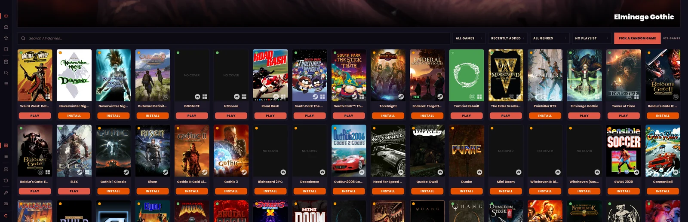
I kept forgetting which of my games were native. The store page is no help here: plenty of things that have a Linux build are sitting on my disk as the Windows one, because that is the depot that came down. So the badge answers the only question worth asking, which is what is in the folder right now. A penguin is a native Linux build. The four panes are a Windows build going through Proton. They sit beside the store mark in the corner of the cover.
Reading the files is easy. Trusting what you find is not. A Windows game can ship a Linux library. A Windows game can bundle a whole Linux toolchain stuffed with real Linux executables. An FNA game can have no executable at all and still be the Linux build. And I was certain Baldur’s Gate 3 had no native version, right up until I found it sitting in its own folder. My library came out at 49 native and 147 Windows. Every one that caught me out is written down in the code so it does not catch me twice.
DOOM CE died before the title screen. Now it installs clean and starts
It goes in as the port it is, on the right copy of doom2.wad. Doom 64 CE is in too.
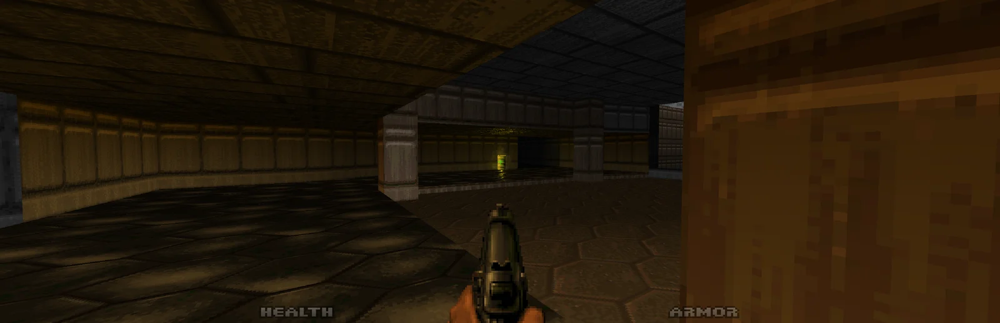
DOOM CE died before the title screen. It was filed in the catalogue as a mod, and it is not one: it brings its own engine, and its .ipk3 is an IWAD rather than something you stack on top. So the install screen offered you the engine’s own files to tick, you quite reasonably ticked them all, and handing one of those to a running engine kills it on the spot.
Underneath that sat a quieter one. The DOOM + DOOM II re-release ships each IWAD twice: the new build at the top of the folder, the original DOS one buried under dosdoom/base. Clarity took whichever was nearest the top, which was the wrong one. DOOM CE will not touch that copy and does not say so. It loads plain Doom II instead, so it looks like it worked and you are left wondering where PSX Doom went.
Both are fixed, and it installs on its own now, as the standalone thing it always was.
Doom 64 CE is in as well. Its IWAD cannot be linked, it has to be built out of the Doom 64 WAD, and the mod ships a Windows script to do it. What I had missed is that the same download also carries a Linux build of the patcher. So Clarity runs that during the install, with the mod’s own tool and nothing going through Windows. Bring a copy of Doom 64 and the rest happens on its own.
Star Renegades, Weird West, and anything else with a cutscene in it.
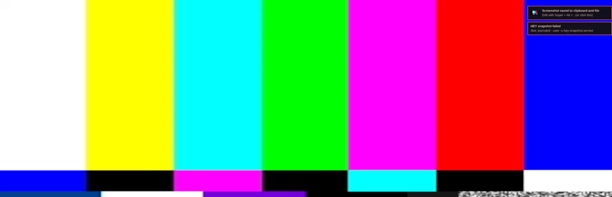
Press play and get a test card and a band of static where the intro should be. I had it down as a codec problem, which was half right and entirely unhelpful, because the codec was fine. What was wrong was which Proton the game got.
Clarity ranks the Proton builds on your machine and hands the best one to the game. UMU-Proton sat in the same group as GE-Proton, and inside a group the later name wins, which meant UMU beat GE on the letter U. Nobody wrote that rule, it fell out of the sorting. And that particular build carries the plugin that decodes video without carrying any of the libraries the plugin needs, so nothing decoded at all. The game got no frames and drew whatever happened to be left in the buffer.
GE-Proton is preferred again and the intros play. If you want a specific build for a specific game you can still choose one yourself, and your choice still wins.
Road Rash broke four times over. Now all four are handled when you press play
I have the disc. That turned out to be the easy part.
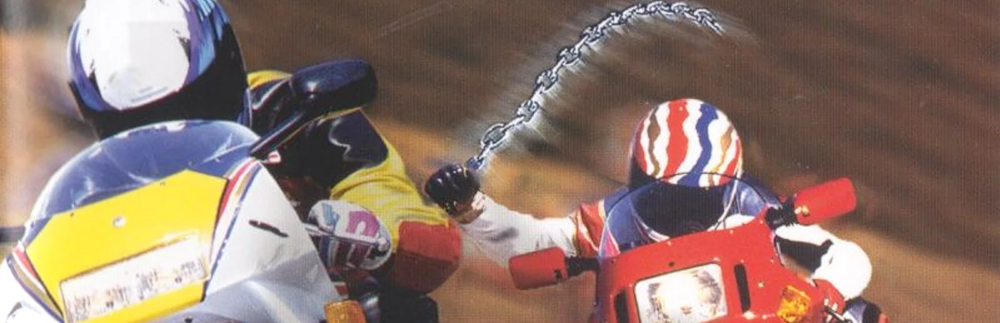
Point Clarity at a backup of the Road Rash disc and it installs. Everything is on there, 467MB of it, and the game reads its own files from its own folder, so a copy off the disc should be all it takes.
It was not. I pressed play and nothing happened, which is the worst kind of nothing: no window, no error, no log. What the game wanted was a file called AWEMAN32.DLL, which does not sit beside the game. It is in the setup folder, and on Windows the installer copies it into place. Copy the disc yourself and the game fails before a window exists.
Put that back and it got further, then gave up with a box saying Fatal Error. It had asked the display to become 640x480, which my screen refused, and the game treats that as the end of the world. Fair enough, it is 1996.
Past that, a new Fatal Error: Could not find any CD-ROM drive. Of course not. The disc is a folder now. And past that, one more: You need to install RoadRash before you can run it. Please run the Setup program. The game looks for a note the installer leaves in the registry, one line saying where it put itself, and without it nothing else matters.
All four are now dealt with when you press play. The file is put where it belongs, the game gets a 640x480 screen of its own, a drive is pointed at the disc and told it is a CD, and the note is written. No wizard, no Windows 95 warning to click past, nothing to copy by hand.
The disc also carries a small setup program, and Clarity deliberately ignores it. It is an installer format nothing here can open, and unpacked it becomes a file called RoadRash.exe that would cheerfully get installed as though it were the game.
Two of those fixes only turned up after wiping everything and installing like a machine that had never seen the game. On this one, where I had fixed things by hand all evening, it looked like it worked. It did not.
The lighting, the palette and the soundtrack, on an engine that can actually do them.
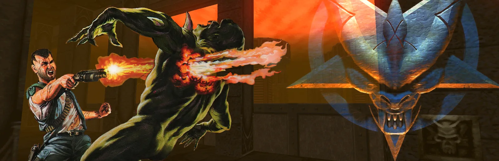
The PlayStation version of Doom was its own thing. Coloured lighting the PC never had, a darker palette, and Aubrey Hodges’ soundtrack, which is less music than weather. DOOM CE rebuilds that and PSX Final Doom on modern GZDoom, and it is now in the catalogue.
It wants doom2.wad, so you need a copy of Doom II. If the library has one, Clarity links the WAD in beside the game. The engine comes in the download, so there is nothing to install first: DOOM CE ships its own UZDoom and installs as a folder of its own. UZDoom also renamed its download when it went to 5, so the catalogue points at the right file now.
Doom 64 CE was not included at the time, because its IWAD has to be built rather than linked. It is in now. The story is here.
Clarity now runs on a television older than most of my games
Couch Mode is built around cover art. A tube TV has nowhere to put any.
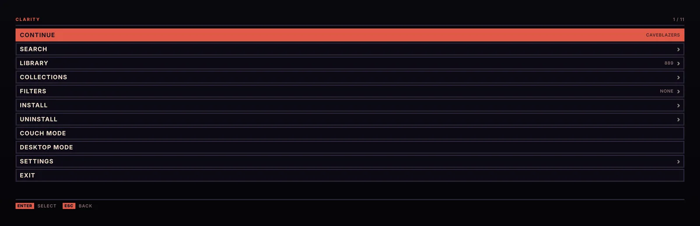
I wanted my library on a CRT, so I plugged the machine into one and started Couch Mode. It was not broken. It was just useless on a screen like that, which is worse, because there is nothing to go and fix.
Couch Mode is built around artwork, and a tube cannot show artwork. Over a composite cable a cover ends up about the width of your thumb and the colour smears into a haze. Thin lines flicker, because half the picture is drawn on one pass and half on the next, so a one pixel rule is only ever there for half the time. And every set crops the edges by a different amount, so anything near a corner is gone on somebody’s set.
So there is another face now. It is not Couch at a smaller size, it is a menu. A row of text is the interface, and art is only there to tell two similar rows apart. Up and down move, one button goes in, one goes back. That is the whole thing. It is all a D-pad can do anyway, and it is how TV menus have always worked. Arrow keys and Enter work too.
Everything happens there. Install and uninstall your GOG and Epic games, fetch artwork and details, search, filter by store, make playlists, mark favourites, switch a game to the compatibility mode that fixes it, and play. You never get up and walk to the desk, which was the point.
It follows your Omarchy theme while it is open, so changing the theme restyles it right away.
The Witcher did nothing when you pressed play. Now it starts, with its text back
No window, no error, not even a log. The game had quietly decided it was not installed.
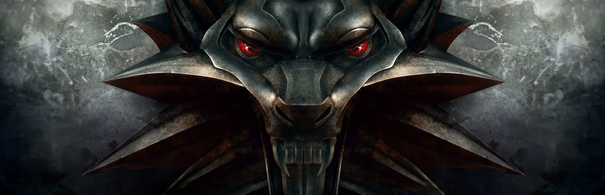
This is the most annoying way for a game to fail. A crash leaves you something to read. The Witcher left nothing. You press play and nothing happens.
When GOG’s own installer runs on Windows it does not just copy files, it writes down where it put them. On Linux the download finishes and that is the end of it, so the note is never written.
Both GOG’s launcher and the game itself look for that note before they do anything else, and neither has a backup plan. They do not find it, they give up, and they exit reporting success. That last part is why nothing had an error to show you.
Clarity writes the note itself now, when you press play, and rewrites it if you ever move the game. It sets the language at the same time, and you want that: without it the game starts with every menu blank.
Brutal Doom on IDKFA, chosen at the moment you press play, built from a game already on your disk.
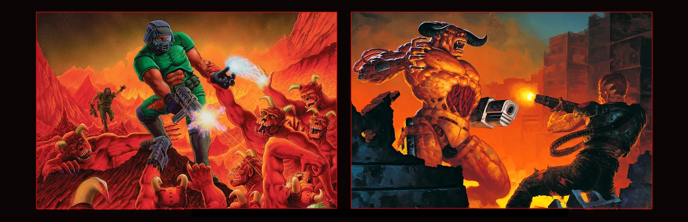
Launch a Doom mod in Clarity and it already asks which Doom you want it to run on. Now it asks which music, too.
Nothing is downloaded. If you own the DOOM + DOOM II re-release, the alternate soundtracks are already sitting inside it: Andrew Hulshult’s IDKFA, and the original Bobby Prince score re-recorded. Clarity builds the music file from the copy you own, and the audio that comes out is byte for byte the audio that went in. If you do not own the re-release, the question is never asked, because there is nothing to build it from.
I expected this to be an afternoon of renaming things. It was not, and the reason is properly stupid: the name of a music track does not tell you which song is in it, and which song it is changes from one game to the next.
Doom reuses its own music, so one song can be asked for under two names. Replace only the name you recognise and half the game drops back to MIDI while the other half plays the new score. Worse, TNT uses the very same names for entirely different music, so going by name alone would confidently put the wrong song on nearly every map of it.
So Clarity does not go by name. It fingerprints the music in your own copies and matches on what the songs actually are. Doom and Doom II come out right, and TNT is offered nothing at all. That is the right answer. Better than something that looks right and is not.
Arcanum closed the instant you pressed play. Now it opens
No window, no error. The thing meant to fix the game was what broke it.
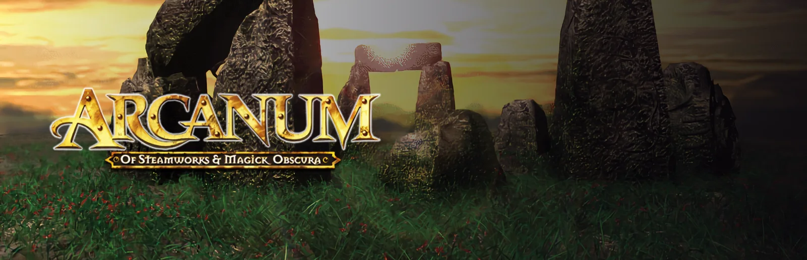
I installed Arcanum, pressed play, and nothing happened. No window, no error, just the library sitting there as if I had not clicked. I fixed this game years ago on another system, so it felt personal.
GOG includes a small helper file with Arcanum that keeps it running on modern Windows. Clarity normally lets a game use the helper it came with, and that is exactly what rescues Quake and Resident Evil 2. Arcanum turns out to be the opposite case: on Linux that helper cannot work, and it takes the game down with it before anything appears on screen.
Clarity now leaves it out for this one game, and Arcanum starts. Nothing is deleted, nothing to set up, and the helper stays on disk for anyone who wants it back on Windows.
One more thing came out of it. While I was in there I found the per-game fixes had quietly stopped being applied at all, so the whole list on the fixes page was doing nothing. That is fixed too, which means the rest of them are working again.
Fallout: London installed perfectly and would not start. Now it loads
Music over a black screen, a warning about loose files, and a browser tab nobody asked for.
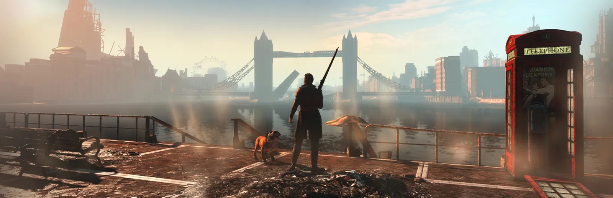
The GOG one-click edition downloads beautifully. Every file arrives, nothing errors, the library shows it as installed. Then you press play and the game opens for about a second, the music starts over a black screen, a little warning appears about loose files, and your browser opens a mod page you did not ask for.
It is the second time this exact shape of fault has turned up, and it has the same cause as the first. A GOG installer does not stop when the files land. It performs finishing steps afterwards, copying configuration and a plugin list into places the game will look. On Windows those steps run. On Linux the download finishes and that is the end of it, so the game is complete and misconfigured at the same time, which is the most annoying way for something to be broken.
Two things were missing. London’s plugin list never reached the game, so none of London ever loaded, which is the black screen. And loose file loading stayed switched off, which is what the warning was about before the game gave up.
The second one cost the evening. The setting that turns loose files on is written by GOG into one file, and Fallout 4 only honours it from a different one. So it was there, it looked right, and it did nothing. Putting the same lines where the engine actually reads them is what let the game start, and it survives Fallout 4 rewriting its own settings on every launch, which it does.
Both steps now run when you press play, repairing the install you already have. No reinstall, nothing to configure, and it only touches files that are missing, so if you have set any of this up by hand it is left exactly as you left it.